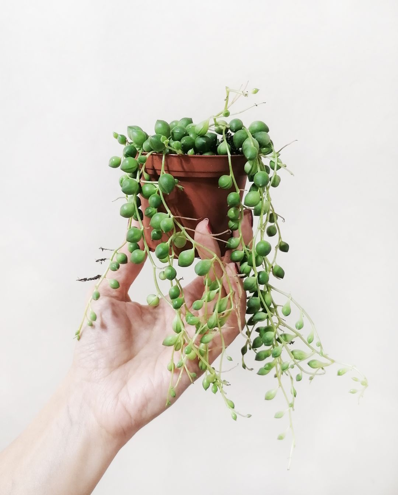
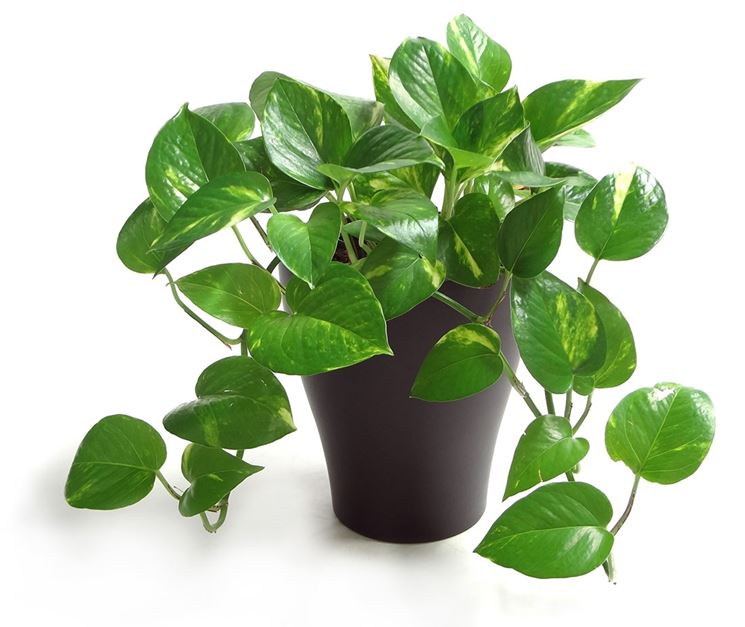

|  | |
| Origine: Namibia | |
| La Curio rowleyanusè una pianta angiosperma dicotiledone della famiglia delle Asteraceae. È una succulenta dai lunghi fusti sottili, striscianti, con caratteristiche foglie sferiche, di circa 5-6 mm di diametro. |
|
| Prezzo: 35€ | |
| Quantità disponibile: 128 |
|  | |
| Origine: Malasia | |
| La Epipremnum aureumcomunemente nota come pothos, è una pianta sempreverde della famiglia delle Araceae. Una liana può raggiungere i 20 m di altezza, con fusti fino a 4 cm di diametro. Si arrampica utilizzando radici aeree che si agganciano ai rami degli alberi. |
|
| Prezzo: 10€ | |
| Quantità disponibile: 2048 |